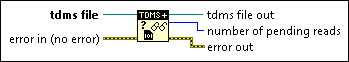

TDMS Get Asynchronous Read Status (Data Ref) Function
Owning Palette: TDMS Advanced Data Reference I/O Functions
Requires: Base Development System (Windows)
Returns the number of pending asynchronous reads issued by the TDMS Advanced Asynchronous Read (Data Ref) function.
 | Tip Use this function when you monitor an application that issues a series of asynchronous reads over a long period of time. By querying the number of pending reads and keeping track of the highest value this function returns, you can choose an appropriate value for the max asynchronous reads input of the TDMS Configure Asynchronous Reads (Data Ref) function. |

 Add to the block diagram Add to the block diagram |
 Find on the palette Find on the palette |